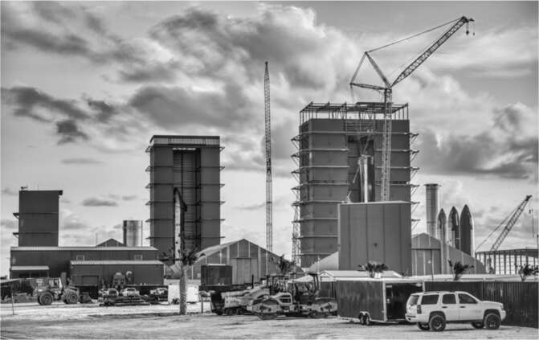

Chế độ kỹ thuật
"Mạng lưới thần kinh của tôi đang bừng cháy như ngày Quốc khánh," Musk hân hoan. "Đây là điều tôi thích làm nhất, lặp đi lặp lại với các kỹ sư xuất sắc!" Ông đang ngồi trong phòng họp của Starbase ở Boca Chica vào đầu tháng 9 năm 2021, với kiểu tóc cắt sát trông như được thực hiện bởi một thợ cắt tóc sắp bị hành quyết của một nhà lãnh đạo Triều Tiên. "Tôi tự cắt tóc," ông nói với các kỹ sư. "Tôi nhờ người khác cắt phần sau."
Trong những tuần trước đó, Musk đã trải qua những giai đoạn tuyệt vọng và tức giận về động cơ Raptor của Starship. Nó đã trở nên phức tạp, đắt đỏ và khó sản xuất. "Khi tôi nhìn thấy một ống kim loại trị giá hai mươi nghìn đô la, tôi muốn lấy nĩa đâm vào mắt mình," ông nói. Ông tuyên bố, kể từ bây giờ, ông sẽ tổ chức các cuộc họp trong phòng họp SpaceX với nhóm Raptor lúc 8 giờ tối mỗi ngày, kể cả cuối tuần.
Musk đặc biệt quan tâm đến khối lượng vật liệu được sử dụng. Ông chỉ ra rằng độ dày của xi lanh động cơ giống với độ dày của vòm, mặc dù chúng sẽ chịu áp suất khác nhau. "Chuyện quái gì đang xảy ra vậy?" ông hỏi. "Có cả đống kim loại ở đó mà chẳng có ý nghĩa gì cả." Mỗi ounce khối lượng dư thừa sẽ làm giảm lượng tải trọng mà tên lửa có thể phóng.
Một quyết định quan trọng — được đưa ra trong cuộc họp bị trì hoãn đến tận nửa đêm vì các phi hành gia Inspiration4 đang hạ cánh — là chế tạo động cơ bằng vật liệu ưa thích của ông ấy, thép không gỉ, càng nhiều càng tốt. Sau khi xem qua một loạt slide về các cách giảm thiểu việc sử dụng hợp kim đắt tiền, Musk ngắt lời. "Đủ rồi," ông tuyên bố. "Các anh đang bị tê liệt phân tích. Chúng ta sẽ chuyển mọi bộ phận có thể sang thép giá rẻ."
Ban đầu, ngoại lệ duy nhất ông cho phép là các bộ phận tiếp xúc với quá trình đốt cháy khí giàu oxy nóng. Một số kỹ sư phản đối và đề xuất rằng đồng, với khả năng dẫn nhiệt tốt hơn, là cần thiết cho tấm mặt. Nhưng Musk lập luận rằng đồng có nhiệt độ nóng chảy kém hơn. "Tôi tin rằng các anh có thể làm tấm mặt bằng thép," ông nói. "Hãy làm đi. Tôi nghĩ tôi đã nói rất rõ ràng: làm bằng thép." Ông thừa nhận có khả năng việc này sẽ không thành công, nhưng thà thử và thất bại còn hơn là phân tích vấn đề hàng tháng trời. "Nếu làm nhanh, các anh sẽ biết kết quả nhanh. Và sau đó có thể sửa chữa nhanh." Cuối cùng, ông đã thành công trong việc chuyển đổi hầu hết các bộ phận sang thép không gỉ.
Jake McKenzie
Khi Musk điều hành các cuộc họp trong phòng hội nghị mỗi đêm, ông đang tìm kiếm người có thể giám sát thiết kế Raptor. "Có ai nổi bật lên không?" Shotwell hỏi ông sau một trong những buổi gặp gỡ trực tiếp.
"Mạng lưới thần kinh của tôi để đánh giá kỹ năng kỹ thuật rất tốt, nhưng thật khó để làm điều đó khi họ đeo khẩu trang," Musk phàn nàn. Vì vậy, ông cũng bắt đầu các buổi gặp gỡ riêng, đặt ra hàng loạt câu hỏi cho các kỹ sư cấp trung.
Sau vài tuần, một kỹ sư trẻ tên Jacob McKenzie bắt đầu nổi bật. Sự kết hợp giữa nụ cười trẻ thơ và mái tóc dreadlock dài ngang vai khiến anh ấy trông thật ngầu một cách kín đáo. Musk ưa thích hai kiểu phó tướng: kiểu Red Bull, như Mark Juncosa, người luôn tr overflowing năng lượng và nói nhiều khi họ tuôn ra ý tưởng, và kiểu Spock, người có giọng đều đều mang đến cho họ phong thái điềm tĩnh và năng lực như người Vulcan. McKenzie thuộc loại thứ hai.
Anh lớn lên ở Jamaica và sau đó chuyển đến Bắc California, nơi anh bắt đầu quan tâm đến ô tô, tên lửa và "bất cứ thứ gì liên quan đến kỹ thuật nặng." Gia đình anh nghèo, vì vậy anh làm việc trong kho để kiếm tiền khi còn học trung học. Anh tiết kiệm để học tại Cao đẳng Santa Rosa Junior, nơi anh học kỹ thuật, và đạt kết quả đủ tốt để chuyển đến Berkeley và sau đó là học cao học tại MIT, nơi anh lấy bằng tiến sĩ về kỹ thuật cơ khí.
Tại SpaceX, nơi anh gia nhập vào năm 2015, anh quản lý nhóm cung cấp van cho động cơ Raptor. Đó là một vai trò quan trọng. Khi quá trình đếm ngược bị dừng lại, thường là do van bị rò rỉ. McKenzie chỉ tương tác với Musk vài lần, vì vậy anh rất ngạc nhiên khi Musk bắt đầu nói chuyện với anh về việc điều hành chương trình Raptor. "Tôi không nghĩ ông ấy biết tên tôi," McKenzie nói. Điều đó thực sự có thể đúng, nhưng Musk biết công việc của anh đang thành công. Nhóm của McKenzie đã cải tiến thành công bộ truyền động cánh của Starship, một trong nhiều dự án mà Musk đích thân tham gia.
Vào một đêm tháng 9 năm 2021, ngay sau nửa đêm, Musk nhắn tin cho McKenzie: "Cậu còn thức không?". Không ngạc nhiên, McKenzie trả lời: "Vẫn còn, em sẽ ở văn phòng thêm vài tiếng nữa". Musk gọi điện và nói rằng anh sẽ thăng chức cho McKenzie. Vào lúc 4:30 sáng, Musk gửi email: "Từ giờ trở đi, Jake McKenzie sẽ báo cáo trực tiếp cho tôi". Musk cho biết, một trong những mục tiêu của McKenzie là "loại bỏ hầu hết các mặt bích và bộ phận Inconel, thay vào đó sử dụng hợp kim thép có thể hàn, cũng như loại bỏ bất kỳ bộ phận nào *có khả năng* không cần thiết. Nếu sau này chúng ta không phải lắp lại bất kỳ bộ phận nào, tức là chúng ta chưa loại bỏ đủ".
McKenzie bắt đầu áp dụng các giải pháp theo kiểu ô tô, trong một số trường hợp giúp giảm chi phí linh kiện đến 90%. Anh đề nghị Lars Moravy, một trong những giám đốc điều hành hàng đầu của Tesla dưới quyền Musk, cùng đi dọc dây chuyền sản xuất của SpaceX và đề xuất các kỹ thuật ô tô để đơn giản hóa mọi thứ. Đôi khi, Moravy kinh ngạc trước sự phức tạp không cần thiết trên dây chuyền động cơ tên lửa đến mức phải che mắt. McKenzie hỏi: "Anh có thể đừng che mặt nữa được không? Vì điều đó thực sự, thực sự làm tổn thương em".
Thay đổi lớn nhất mà Musk thực hiện là giao cho các kỹ sư thiết kế phụ trách sản xuất, giống như ông đã làm một thời gian tại Tesla. Trong một trong những cuộc họp đầu tiên do McKenzie chủ trì, Musk nói: "Tôi đã tạo ra các nhóm thiết kế và sản xuất riêng biệt từ lâu, và đó là một sai lầm chết tiệt. Các anh chịu trách nhiệm về quy trình sản xuất. Các anh không thể giao nó cho người khác. Nếu thiết kế tốn kém để sản xuất, các anh phải thay đổi thiết kế". McKenzie và nhóm kỹ sư của anh đã chuyển bảy mươi lăm bàn làm việc của họ đến cạnh dây chuyền lắp ráp.
Động cơ 1337
Một phương pháp Musk sử dụng khi gặp vấn đề nan giải là chuyển sự chú ý sang thiết kế phiên bản tương lai của sản phẩm. Đó là điều ông đã làm với Raptor vài tuần sau khi McKenzie tiếp quản. Ông tuyên bố rằng họ sẽ chuyển sự chú ý sang chế tạo một động cơ hoàn toàn mới. Nó sẽ đủ khác biệt đến mức ông thậm chí không muốn đặt tên nó theo một loài chim ưng, như Merlin hay Kestrel. Thay vào đó, ông quyết định sử dụng một meme từ thế giới lập trình và gọi nó là 1337, phát âm là "LEET". (Các chữ số trông giống như những chữ cái đó.) Mục tiêu là tạo ra một động cơ có giá dưới 1.000 đô la cho mỗi tấn lực đẩy và do đó, theo ông, sẽ là "bước đột phá cơ bản cần thiết để biến cuộc sống đa hành tinh thành hiện thực".
Mục đích của việc nhảy vọt sang một động cơ mới là để mọi người suy nghĩ táo bạo. Trong một bài phát biểu trước nhóm, ông nói: "Mục tiêu của chúng ta là động cơ phiêu lưu vĩ đại. Nó có cơ hội thành công lớn hơn không không? Nếu có, hãy bắt tay vào làm! Nếu chúng ta thấy rằng có những thay đổi mà chúng ta đã thực hiện quá mạo hiểm, thì chúng ta sẽ lùi lại". Nguyên tắc chỉ đạo là tạo ra một động cơ gọn nhẹ. Ông nói: "Có rất nhiều cách để lột da mèo. Nhưng điều quan trọng là phải biết con mèo sau khi bị lột da trông như thế nào. Câu trả lời là cơ bắp và dữ dằn".
Khuya hôm đó, ông đã gửi một loạt tin nhắn để nhấn mạnh mức độ nghiêm túc của ông đối với nỗ lực mới này. Ông viết: "Chúng ta không hướng tới mặt trăng. Chúng ta đang hướng tới sao Hỏa. Tinh thần khẩn trương đến điên cuồng là nguyên tắc hoạt động của chúng ta". Trong một tin nhắn gửi trực tiếp cho McKenzie, ông nói thêm: "Động cơ SpaceX 1337 là bước đột phá quan trọng cuối cùng cần thiết để đưa nhân loại lên sao Hỏa!!! Không từ nào có thể diễn tả hết tầm quan trọng của điều này đối với tương lai của nền văn minh".
Ông ấy đích thân đề xuất một số ý tưởng táo bạo, chẳng hạn như loại bỏ toàn bộ ống góp khí nóng và hợp nhất bơm nhiên liệu turbo với vòi phun buồng đốt chính. "Việc này có thể dẫn đến phân phối khí nhiên liệu kém, cũng có thể không. Hãy cùng tìm hiểu." Ông ấy liên tục thúc đẩy chiến dịch này bằng email hầu như mỗi đêm. "Chúng ta đang trong cơn cuồng phong *xóa bỏ*!!" ông ấy viết trong một email. "Không có gì là bất khả xâm phạm. Bất kỳ ống, cảm biến, ống góp nào, v.v. dù chỉ hơi đáng ngờ cũng sẽ bị loại bỏ tối nay. Hãy cực kỳ quyết liệt trong việc xóa bỏ và đơn giản hóa."
Trong suốt tháng 10 năm 2021, các cuộc họp bị lùi dần về đêm, hầu hết đều bắt đầu vào khoảng 11 giờ tối. Tuy nhiên, thường có khoảng mười hai người trong phòng họp và hơn năm mươi người tham gia trực tuyến. Mỗi buổi họp thường có một ý tưởng mới về việc đơn giản hóa hoặc loại bỏ. Chẳng hạn, một đêm nọ, ông ấy tập trung vào việc loại bỏ toàn bộ phần chân váy của tên lửa đẩy, là phần hở không chịu áp lực ở dưới cùng. "Nó không giúp chứa nhiều nhiên liệu," ông ấy nói. "Giống như tiểu vào bể bơi. Chẳng ảnh hưởng gì mấy đến bể bơi."
Sau một tháng, cũng đột ngột như khi ông ấy bắt nhóm của mình tập trung vào động cơ 1337 tương lai, Musk chuyển sự chú ý của họ trở lại việc sửa đổi động cơ Raptor hiện tại thành Raptor 2 gọn nhẹ và mạnh mẽ hơn. "Tôi đang chuyển trọng tâm của SpaceX về động cơ Raptor," ông ấy thông báo trong một tin nhắn lúc 2 giờ sáng. "Chúng ta cần tốc độ sản xuất động cơ là một chiếc mỗi ngày để duy trì tốc độ phóng tốt. Hiện tại là một chiếc mỗi ba ngày." Tôi hỏi liệu điều đó có làm chậm quá trình phát triển của 1337 hay không. "Có," ông ấy trả lời. "Chúng ta không thể chinh phục đa hành tinh với Raptor, vì nó quá đắt, nhưng Raptor là cần thiết để hỗ trợ chúng ta cho đến khi 1337 sẵn sàng."
Liệu sự dồn dập rồi rút lui của 1337 là một chiến lược được Musk cân nhắc kỹ lưỡng để khiến nhóm của mình suy nghĩ táo bạo hơn, hay đó là một hành động bốc đồng mà sau này ông ấy đã rút lại? Như thường lệ với ông ấy, đó là sự kết hợp của cả hai. Nó phục vụ mục đích thúc đẩy những ý tưởng mới, bao gồm việc loại bỏ nhiều loại vỏ bọc và chân váy, những thứ sẽ được kết hợp vào mục tiêu của ông ấy cho một động cơ Raptor cải tiến. "Bài tập này đã giúp xác định một động cơ lý tưởng trông như thế nào," McKenzie nói. "Nhưng nó không tạo ra bước đột phá cho những thứ cần thiết ngay lập tức để thúc đẩy chương trình Starship." Trong năm tiếp theo, McKenzie và nhóm của ông đã có thể sản xuất hàng loạt Raptor gần giống như sản xuất ô tô trên dây chuyền lắp ráp. Vào Lễ Tạ ơn năm 2022, họ đã sản xuất được hơn một chiếc mỗi ngày, tạo ra một kho dự trữ cho các lần phóng Starship trong tương lai.
Jake McKenzie trên đỉnh một nhà xưởng cao tầng

Các lều xây dựng và nhà xưởng cao tầng ở Boca Chica